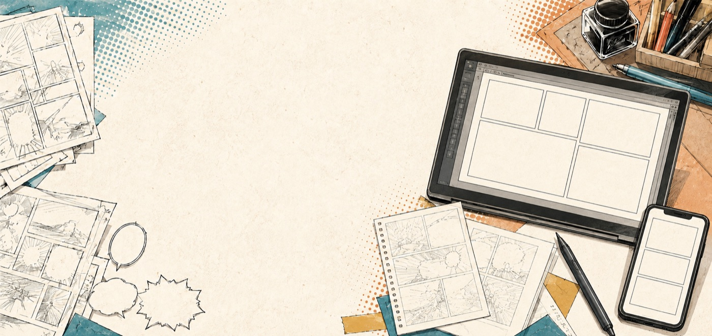
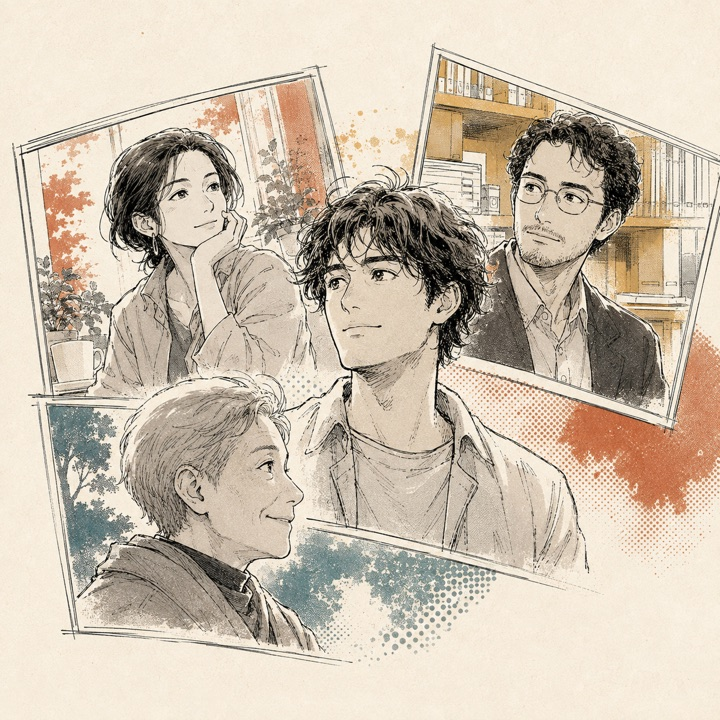
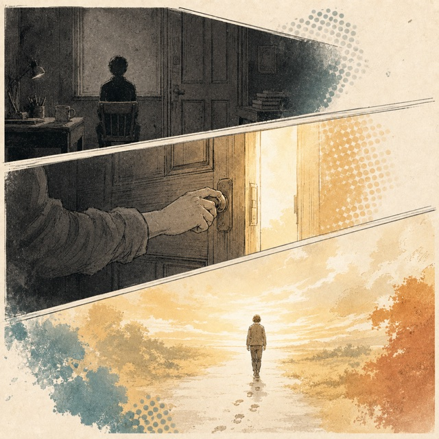
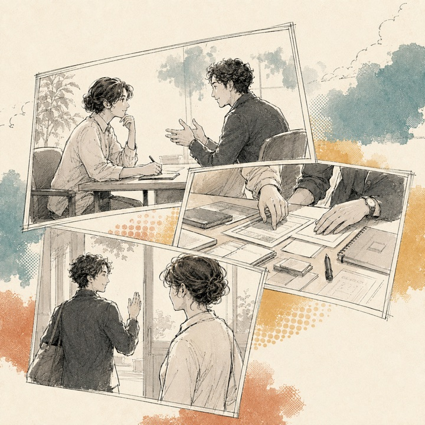

名刺がわりに、あなたの「この仕事のはじまり」を10ページの漫画にします。
章を書き終えるたびに、あなたのネームのコマが1つ埋まります（下書きは自動保存）
まずは、今のあなたのことから。短く答えられる質問です。
漫画の最後に「今のあなた」として登場します。

今の仕事を始めたきっかけが、この漫画の主役です。
あの日があって、今のあなたがいる。

ここが漫画の中身になる、いちばん大事な章です。年表のように全部書く必要はありません。そのかわり、「何があったか」の要約よりも、その場面を教えてください——どこにいて、誰と一緒で、何と言われ、何と返したか。漫画では、この場面がそのままコマとセリフになります。話し言葉・箇条書きで大丈夫です（スマホの音声入力も便利です）。
① はじまりの出来事→ 漫画の感情の山になります
② その前のあなた→ 読んだ人が「私も同じだ」と重ねる場面になります
③ 気づいたこと→ 漫画の中心になり、今のお仕事へつながる一言になります
物語の後半で、今のお仕事を紹介します。
あの日の気づきが、今の仕事になった。

お客様との場面（あれば）→ 今のお仕事の紹介の中で、1場面だけ描きます
名刺を渡すように、あなたとつながる入口をつくります。
読み終えた人が、あなたに会いに来られるように。
このページだけでは回答は送信されません。下のボタンから、担当者へお送りください。
LINEが開き、回答が入力された状態になります。送り先に担当者を選んで、送信してください